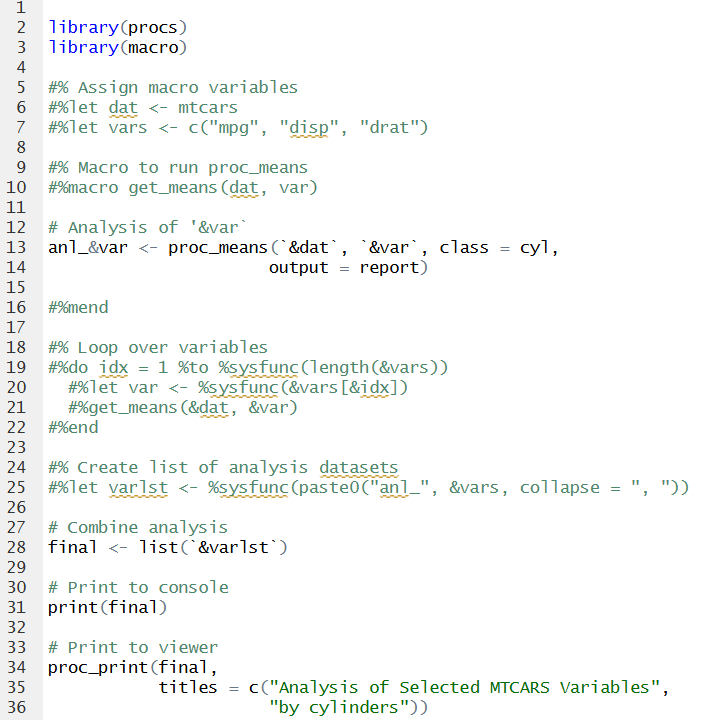
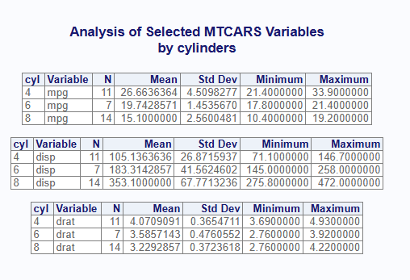

The macro package provides macro commands and a pre-processor for R programs. The package can be useful in several ways. Before illustrating the functionality, let’s first discuss the macro concept at a high level.
A macro language is like a meta-language for code. The meta-language runs first, generates the regular code, and then the regular code is executed to produce some sort of output. It is, at heart, a text manipulation system.
The SAS® macro language is commonly used in SAS programs. The R macro package was inspired by SAS. Specifically, the macro package aims to mimic SAS macro with “mprint” and “mfile” options turned on. These options generate a resolved code file.
Clearly, a macro language for R will not be the same as the SAS macro language. The SAS macro language is built into the SAS execution environment. The SAS pre-processor is run automatically, and the macro syntax is understood by the SAS syntax checker.
With R, none of the above applies. R does not have a built-in macro language, does not have a built-in pre-processor, and the R syntax checker will not expect any sort of macro language syntax.
Therefore, to build macro-like functionality in R, we must get a little creative.
The first thing to note is that macro statements in the macro package are written as code comments. The comments ensure that the R syntax checker will not generate an error when parsing the macro functions.
In SAS, macro functions are prefixed with a percent sign (%). In R, macro statements are therefore prefixed with a comment symbol (#) and a percent sign (%). A simple macro assignment looks like this:
#%let x <- 1A simple macro conditional looks like this:
Note that the above R macro syntax is not identical to the SAS syntax. The syntax devised for the macro package is a blend of SAS and R syntax.
Here are some of the major difference between the SAS macro language and the R macro language:
Otherwise, the R macro language is similar to SAS in terms of basic functionality.
The macro package supports the most basic functionality of a macro system. That includes:
The above functionality covers the majority of use cases for a macro language. Now let’s see how the R macro language is actually implemented.
The table below maps SAS macro statements to the corresponding statement in R. This table can help SAS programmers quickly understand how the macro package works.
| SAS | R | |
| Comment: | %* Here is a comment; | #% Here is a comment |
| Assignment: | %let x = 1; | #%let x <- 1 |
| Conditional: |
%if (&x = 1) %then %do; %put “First condition”; %end; %else %if (&x = 2) %then %do; %put “Second condition”; %end; %else %do; %put “Default condition”; %end; |
#%if (&x == 1) print(“First condition”) #%elseif (&x == 2) print(“Second condition”) #%else print(“Default condition”) #%end |
| Include: | %include “myfile.sas”; | #%include “myfile.R” |
| Built in Functions: |
%sysfunc() %symexist() %symput() %nrstr() |
%sysfunc() %symexist() %symput() %nrstr() |
| Do Loop: |
%do y = 1 %to 3; %put Y is &y; %end; |
#%do y = 1 %to 3 print(“Y is &y”) #%end |
| User-Defined Function: |
%macro test(); %put “Hello!”; %mend; %test(); |
#%macro test() print(“Hello!”) #%mend #%test() |
The table above contains all of the commands in the R macro language. For comprehensive documentation, see the Macro Languge Reference.
In the macro package, pre-processing of the macro
code is accomplished by a special function: msource(). The
msource() function is similar to the source()
function in R. The msource() function will execute your
code, just like the source() function. First, however, it
will execute the macro pre-processor.
The steps can be summarized as follows:
Step 1: Pre-process the code and resolve all macro language
syntax.
Step 2: Generate a new code file with the resolved code.
Step 3: Execute the resolved code with the source()
function.
Notice that the above steps map directly to the way the SAS macro processor works.
In addition, the R macro language is a text-replacement language, just like SAS. Macro variables are swapped out with real values as text replacements. Macro conditions are evaluated, and only the code in the TRUE macro conditions is executed.
All of the above is handled by the msource() function.
msource() is the core function in the
macro package.
The msource() function has several parameters. Here is a
short summary:
msource().
TRUE by default.Additional information about the msource() parameters is
available in the function reference.
To use the macro package, you will first write your macro-enabled R code in a regular “.R” code file. You can use RStudio® or another code editor. The macro statements are written as special comments, as described above. You can execute a macro-enabled program in three different ways:
The below sections will elaborate on these different approaches.
To execute a macro-enabled program, simply call the
msource() function in the console and pass the program
path. If you want to save the generated code, or run in debug mode, pass
the appropriate parameters to msource().
The msource() function provides some convenience for
those people working in RStudio. If you are working in RStudio, the
function will use the path of the currently active program by default.
In that case, you don’t even need to pass the program path. Just call
msource() in the console with no parameters.
A simple example of executing a macro program from the console is provided below. For a more extensive example, please see Example 1.
The msource() function can also be sourced from a
regular R program. You can create a driver script to set up some macro
parameters, and then call the msource() function from the
driver.
For an example of a driver script, see Example 2 or Example 3.
The core features of the macro package are also available via the RStudio Addin menu and keyboard shortcuts. These features allow you to use the macro package interactively in RStudio. They make writing and debugging macro-enabled programs much easier.
See the Installation and Setup vignette for instructions on how to enable and use the macro keyboard shortcuts.
Here is what a simple macro-enabled program looks like:

If you execute the msource() function in the console,
the above program will run and display the following:
> msource()
---------
library(procs)
library(macro)
# Analysis of 'mpg'
anl_mpg <- proc_means(mtcars, mpg, class = cyl,
output = report)
# Analysis of 'disp'
anl_disp <- proc_means(mtcars, disp, class = cyl,
output = report)
# Analysis of 'drat'
anl_drat <- proc_means(mtcars, drat, class = cyl,
output = report)
# Combine analysis
final <- list(anl_mpg, anl_disp, anl_drat)
# Print to console
print(final)
# Print to viewer
proc_print(final,
titles = c("Analysis of Selected MTCARS Variables",
"by cylinders"))
---------
[[1]]
CLASS VAR N MEAN STD MIN MAX
1 4 mpg 11 26.66364 4.509828 21.4 33.9
2 6 mpg 7 19.74286 1.453567 17.8 21.4
3 8 mpg 14 15.10000 2.560048 10.4 19.2
[[2]]
CLASS VAR N MEAN STD MIN MAX
1 4 disp 11 105.1364 26.87159 71.1 146.7
2 6 disp 7 183.3143 41.56246 145.0 258.0
3 8 disp 14 353.1000 67.77132 275.8 472.0
[[3]]
CLASS VAR N MEAN STD MIN MAX
1 4 drat 11 4.070909 0.3654711 3.69 4.93
2 6 drat 7 3.585714 0.4760552 2.76 3.92
3 8 drat 14 3.229286 0.3723618 2.76 4.22
The msource() console output contains two sections. The
first section is the generated code. The second section is any printed
output from the generated code. In this way, you can see what code was
actually sourced, and the output of that code.
If you do not wish to see the generated code, set the “echo”
parameter on msource() to FALSE.
The above macro program also displayed the analysis in the RStudio viewer. It looks like this:

See the procs package
documentation for more information about the proc_means()
and proc_print() functions. Both the macro
package and the procs package are part of the sassy system of packages.
The functions in the macro package operate via an internal memory register called the macro symbol table. The symbol table stores the names and values for any macro variables, and the definition of any macro functions. The symbol table can be accessed from regular R code using a special set of functions. The symbol table functions are as follows:
symtable(): Returns an object
containing the macro symbol table and macro function list. By default,
this object is printed to the console.symclear(): Clears the macro symbol
table and deletes any macro function definitions.symget(): Gets a macro variable value
from the macro symbol table.symput(): Sets the value of a macro
variable.These functions can be used to observe and manipulate the macro symbol table from regular R code or from the console.
For instance, we can follow up on the msource() example
from above by calling the symtable() function in the
console. Like this:
> symtable()
# Macro Symbol Table: 5 macro variables
Name Value
1 &dat mtcars
2 &idx 3
3 &var drat
4 &varlst anl_mpg, anl_disp, anl_drat
5 &vars c("mpg", "disp", "drat")
# Macro Function List: 1 functions
# Function '%get_means': 2 parameters
- dat
- varThe above console output shows the macro symbol table and the macro function list. This information can be useful for ensuring the program ran correctly and for debugging.
For a full discussion on the symbol table functions, see the Symbol Table Functions vignette.
The macro package provides extensive debugging
capabilities. These capabilities can be enabled by activating the
“debug” parameter on the msource() function. When
activated, the debug information will be sent to the console.
Let’s illustrate the debug feature by running msource()
again for the above sample program, but this time set the “debug”
parameter to TRUE:
> msource(debug = TRUE)
********************************************************************************
** Pre-Processing
********************************************************************************
- File In: C:/packages/macro/tests/testthat/programs/sample16.R
- File Out: C:\Users\dbosa\AppData\Local\Temp\RtmpQhWV50/sample16.R
********************************************************************************
[ In#][Out#]:
[ 1][ 1]:
[ 2][ 2]: library(procs)
[ 3][ 3]: library(macro)
[ 4][ 4]:
[ 5][ ]: #% Assign macro variables
[ 6][ ]: #%let dat <- mtcars
[ 7][ ]: #%let vars <- c("mpg", "disp", "drat")
[ 8][ ]:
[ 9][ ]: #% Macro to run proc_means
[ 10][ ]: #%macro get_means(dat, var)
[ 17][ ]:
[ 18][ ]: #% Loop over variables
[ 19][ ]: #%do idx = 1 %to 3
[ 20][ ]: #%let idx <- 1
[ 21][ ]: #%let var <- mpg
[ 22][ ]: #%get_means(&dat, &var)
[ 23][ ]: #%let dat <- mtcars
[ 24][ ]: #%let var <- mpg
[ 25][ ]:
[ 26][ 5]: # Analysis of 'mpg'
[ 27][ 6]: anl_mpg <- proc_means(mtcars, mpg, class = cyl,
[ 28][ 7]: output = report)
[ 29][ 8]:
[ 30][ ]: #%mend get_means
[ 31][ ]: #%let idx <- 2
[ 32][ ]: #%let var <- disp
[ 33][ ]: #%get_means(&dat, &var)
[ 34][ ]: #%let dat <- mtcars
[ 35][ ]: #%let var <- disp
[ 36][ ]:
[ 37][ 9]: # Analysis of 'disp'
[ 38][ 10]: anl_disp <- proc_means(mtcars, disp, class = cyl,
[ 39][ 11]: output = report)
[ 40][ 12]:
[ 41][ ]: #%mend get_means
[ 42][ ]: #%let idx <- 3
[ 43][ ]: #%let var <- drat
[ 44][ ]: #%get_means(&dat, &var)
[ 45][ ]: #%let dat <- mtcars
[ 46][ ]: #%let var <- drat
[ 47][ ]:
[ 48][ 13]: # Analysis of 'drat'
[ 49][ 14]: anl_drat <- proc_means(mtcars, drat, class = cyl,
[ 50][ 15]: output = report)
[ 51][ 16]:
[ 52][ ]: #%mend get_means
[ 53][ ]: #% end do
[ 54][ ]:
[ 55][ ]: #% Create list of analysis datasets
[ 56][ ]: #%let varlst <- anl_mpg, anl_disp, anl_drat
[ 57][ ]:
[ 58][ 17]: # Combine analysis
[ 59][ 18]: final <- list(anl_mpg, anl_disp, anl_drat)
[ 60][ 19]:
[ 61][ 20]: # Print to console
[ 62][ 21]: print(final)
[ 63][ 22]:
[ 64][ 23]: # Print to viewer
[ 65][ 24]: proc_print(final,
[ 66][ 25]: titles = c("Analysis of Selected MTCARS Variables",
[ 67][ 26]: "by cylinders"))
[ 68][ 27]:
********************************************************************************
** Execution
********************************************************************************
> library(procs)
> library(macro)
> # Analysis of 'mpg'
> anl_mpg <- proc_means(mtcars, mpg, class = cyl,
+ output = report)
> # Analysis of 'disp'
> anl_disp <- proc_means(mtcars, disp, class = cyl,
+ output = report)
> # Analysis of 'drat'
> anl_drat <- proc_means(mtcars, drat, class = cyl,
+ output = report)
> # Combine analysis
> final <- list(anl_mpg, anl_disp, anl_drat)
> # Print to console
> print(final)
[[1]]
CLASS VAR N MEAN STD MIN MAX
1 4 mpg 11 26.66364 4.509828 21.4 33.9
2 6 mpg 7 19.74286 1.453567 17.8 21.4
3 8 mpg 14 15.10000 2.560048 10.4 19.2
[[2]]
CLASS VAR N MEAN STD MIN MAX
1 4 disp 11 105.1364 26.87159 71.1 146.7
2 6 disp 7 183.3143 41.56246 145.0 258.0
3 8 disp 14 353.1000 67.77132 275.8 472.0
[[3]]
CLASS VAR N MEAN STD MIN MAX
1 4 drat 11 4.070909 0.3654711 3.69 4.93
2 6 drat 7 3.585714 0.4760552 2.76 3.92
3 8 drat 14 3.229286 0.3723618 2.76 4.22
> # Print to viewer
> proc_print(final,
+ titles = c("Analysis of Selected MTCARS Variables",
+ "by cylinders"))
********************************************************************************
** End
******************************************************************************** The debug information shows how the incoming macro code was processed. For each incoming line, it shows whether that line was emitted to the generated code file, and how it was resolved. Any errors during pre-processing or execution will appear at the point they occurred. In this way, it is very easy to find which line has the error.
For a full explanation of the debugging features in the macro package, see the Debugging vignette.